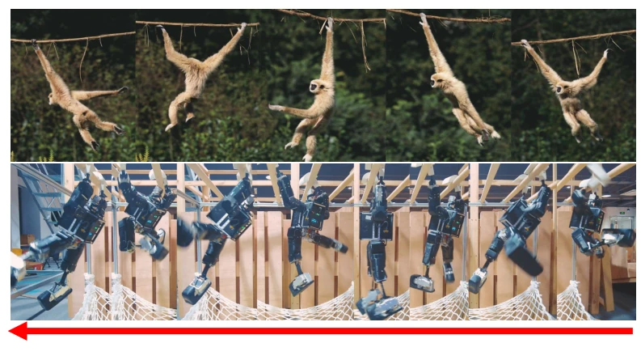
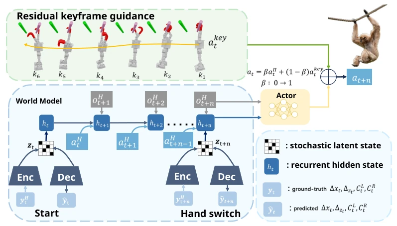
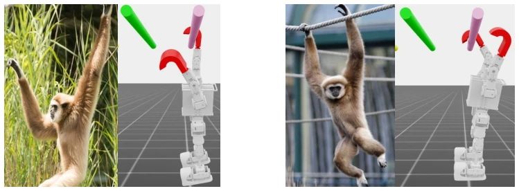
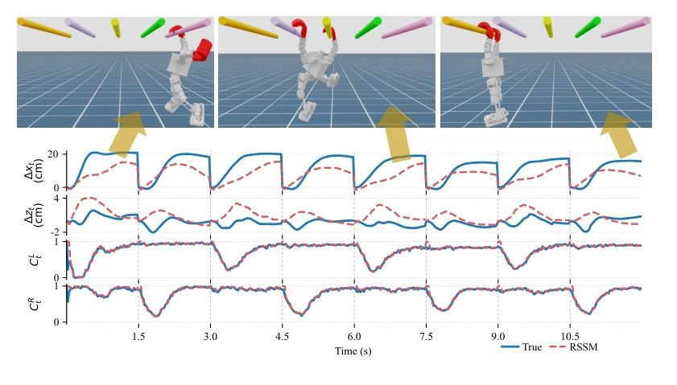
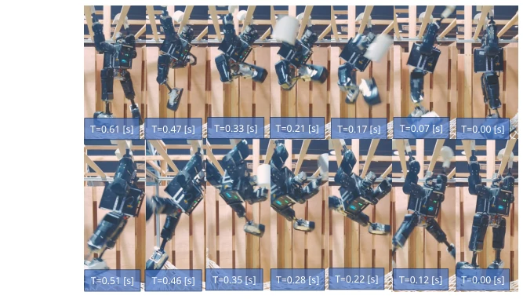
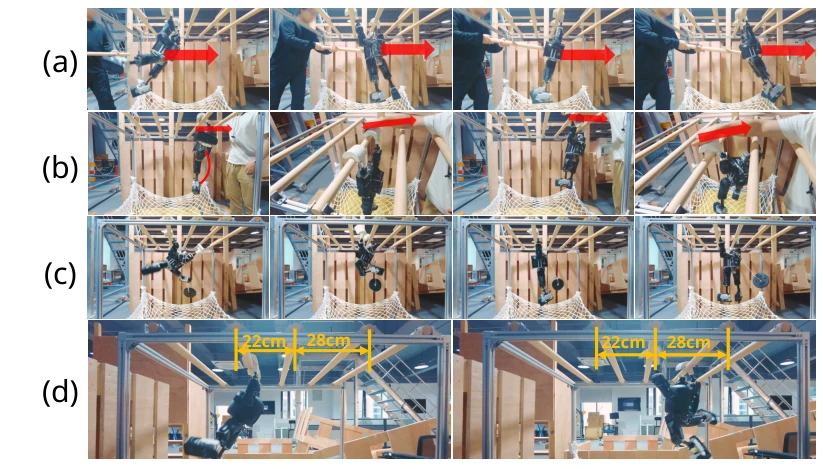
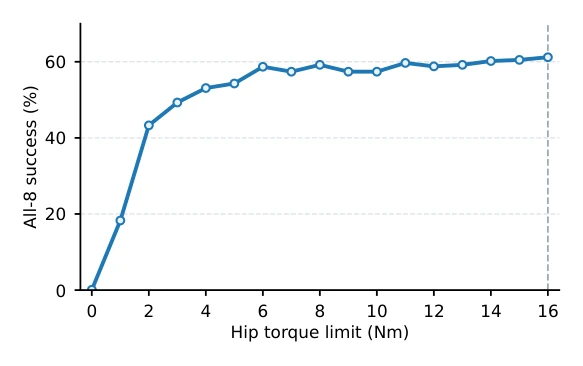
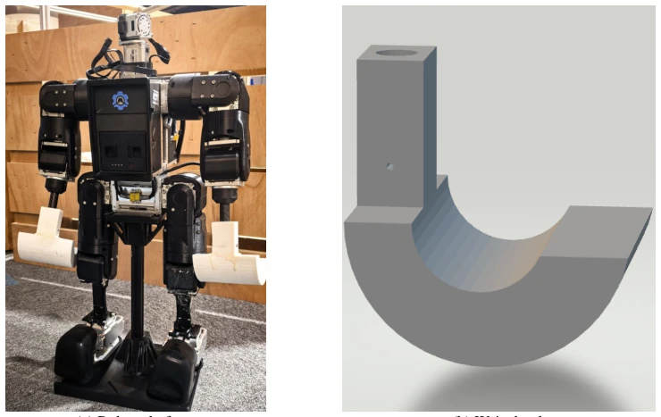
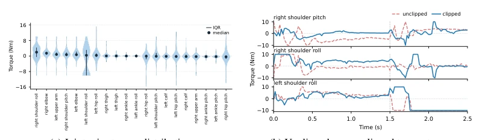
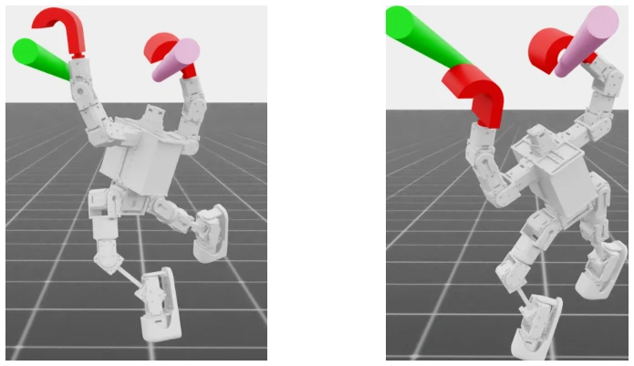

Transplanting the primate "brachiation" capability to high-degree-of-freedom humanoid robots sounds like a sci-fi plot, yet SwingBot has achieved it. The greatest highlight of this work lies in not being hindered by the sparse rewards of pure RL, but instead using biological keyframes to "guide" the policy, and employing RSSM to infer states invisible to the real robot. This "semi-supervised" training approach is clever, leveraging the god's-eye view in simulation while ensuring feasibility for real-world deployment. However, a critique: it still relies on preset bar spacing, unable to flexibly adapt to unknown environments like monkeys, and prolonged operation on the real robot causes motor heating current limiting, resulting in a continuous traversal success rate of only 60%. Overall, this represents a solid implementation of sim-to-real transfer, but remains distant from true "wild survival," especially since it lacks cameras.
The ability of primates to move in complex environments using cantilever structures (Brachiation) offers a supplementary solution to ground locomotion for robots, particularly crucial in disaster sites or cluttered environments such as pipe racks. However, existing research is mostly limited to low-degree-of-freedom simplified models [2, 3] or model-based controllers [28, 29], lacking continuous whole-body coordination for high-degree-of-freedom humanoid robots. Pure reinforcement learning exploration faces significant challenges because the release-swing-capture sequence is extremely sparse, making random actions difficult to trigger successful contact [24, 25]. Furthermore, deployed strategies lack key information such as reliable inter-segment relative displacement and hook contact states, leading to unstable control. Therefore, designing a guidance mechanism for long-horizon exploration and addressing the missing state estimation on the real robot are key to achieving whole-body brachiation in high-degree-of-freedom humanoid robots.

Figure 1: Overview of SwingBot. Inspired by primate brachiation, the high-DoF humanoid robot performs release, swing and capture transitions on overhead bars, enabling continuous whole-body brachiation.
The SwingBot framework is based on the PPO algorithm, with its core comprising two innovative modules. The first is Residual Keyframe Guidance, which borrows from primate kinematics to extract sparse key poses from the release, swing, and capture phases. In the early stages of training, policy actions are mixed with keyframe actions; as training epochs increase, keyframe weights gradually decay (annealing), allowing the policy to transition from imitation to autonomous residual correction, thereby solving the problem of early exploration failing to discover long-horizon sequences. The second is the Privileged RSSM, which addresses the issue where the real robot cannot directly observe inter-segment displacement and contact states by using RSSM to implicitly estimate these variables from proprioceptive history. During training, the Critic receives ground truth, while during deployment, the Actor receives only the latent state generated by RSSM. This design converts the god's-eye view in simulation into deployable latent states, enhancing the policy's inference capability regarding dynamic contact and positional information. The overall process achieves a smooth transition from keyframe-guided exploration to closed-loop autonomous execution.

Figure 2: Overview of the SwingBot framework. The privileged-information RSSM learns recurrent latent states (ht, zt) from rollout histories and reconstructs compact transition variables. The pol- icy acts from proprioception and the RSSM latent, and early rollouts are guided by keyframe-based joint-position commands. Alternating left- and right-hand actions then produce continuous brachia- tion across overhead bars.

Figure 7: Bio-inspired keyframe design. The paired frames compare primate brachiation motion with the corresponding robot keyframes used for release, swing and capture.
Experiments are divided into simulation ablation and real-world testing. In simulation, the continuous traversal success rate (All-8 success rate) was evaluated, comparing variants with and without keyframe guidance and RSSM. Results show that removing the keyframe guidance task led to complete failure, while adding RSSM increased the success rate by approximately 4-5 percentage points, verifying the necessity of guidance and state estimation. Real-world experiments on the physical robot demonstrated performance under continuous left-right hand alternation, 1kg load, external force disturbances, and varying bar spacings. Quantitative data indicates that the single swing success rate exceeds 90%, but the continuous 8-traversal completion rate is approximately 60%, with the primary failure reason being torque reduction due to motor heating during prolonged operation. RSSM reconstruction analysis indicates it can track contact states well, though displacement estimation exhibits certain cumulative errors. Overall, this demonstrates the robustness and transferability of the method in real physical environments.

Figure 3: RSSM reconstruction of privileged transition variables. Solid curves show environment- averaged true targets yt; dashed curves show RSSM reconstructions ˆyt. Yellow arrows indicate the robot motion phase.

Figure 4: Real-robot humanoid traversal. The left- and right-hand sequences show the robot alter- nating support while executing release, swing and capture phases on the physical bar.

Figure 5: Real-robot robustness tests. (a) External push during traversal. (b) Pulling disturbance. (c) Traversal with a 1 kg payload. (d) Traversal across different bar spacings. Red arrows indicate the applied external forces.

Figure 9: Leg-motion analysis during brachiation. Hip torque-limit sweep showing the all-8 success rate under the eight-command switching protocol.
其他图片Other Figures

Figure 6: Hardware platform and wrist hook structure.

Figure 8: Torque analysis for command clipping. The violin plot identifies high-load joints, and the time-series comparison shows how clipping with measured hardware joint limits changes the executed torque profile while preserving traversal behavior in simulation.

Figure 10: Representative leg-motion outcomes under different hip-torque settings.